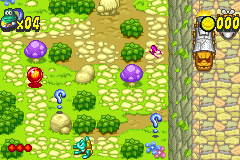
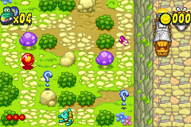

Frogger's Adventures: Temple of the Frog

Not Complete on 2022-4-21
2 / 5
Release Date: Nov 24, 2001
Meta Score: 73
Screenshots
 

Notes
I considered persisting with Frogger but as with many GBA games they’ve put in a lives/game over system which just serves to make the game artificially longer. Fundamentally it’s not a particularly fun or interesting game, and beating it won’t be particularly hard but will involve occaisionally messing up and having to replay a whole level, which is just annoying.